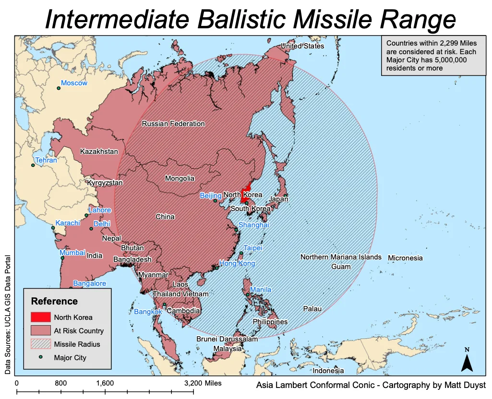
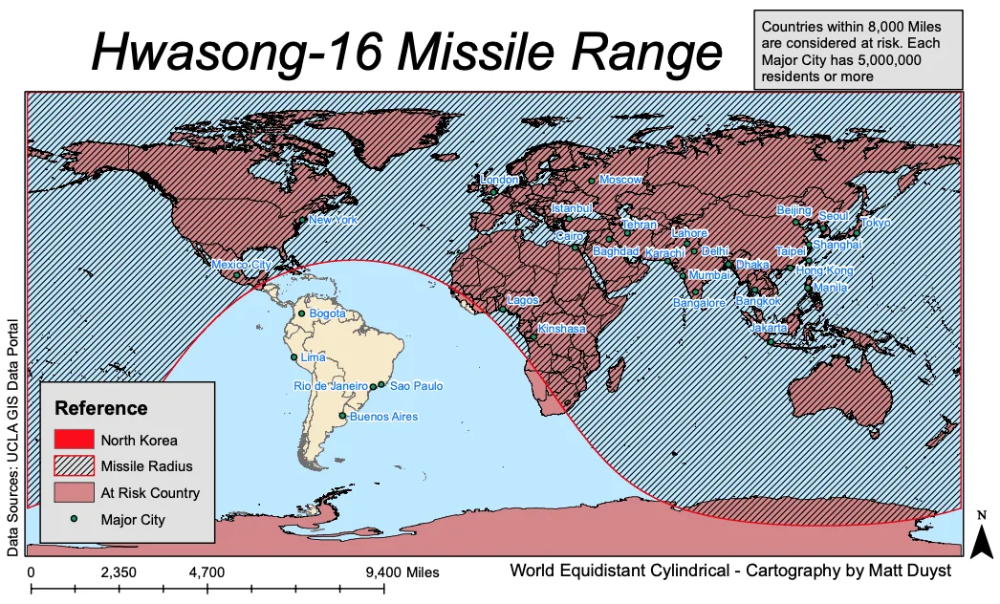

UCLA coursework, 2014 to 2018
Comprehending the Range of North Korea's Strongest Missiles
Intro:
Below are 3 maps that illustrate various ranges of North Korea’s longest ranging missiles: The Hwasong-14 (1,553 miles), the Intermediate Ballistic Missile (2,299 miles), and the Hwasong-16 (8,000 miles). Each missile’s range is denoted by a buffer, which is ascribed the distance of the missile’s projected distance of impact. Additionally, each map showcases which country (highlighted in red) is within range of North Korea’s missiles. Major cities — ranked by having a population of 5 million and higher — are further displayed on each map.
Methods:
The range of North Korea's 3 strongest missiles were obtained online. A world country shapefile was provided through the UCLA GIS Geoportal. North Korea (highlighted in dark red) was isolated by a query builder on the world county shapefile, and then exported as a new layer. Three buffers representing each the missiles' extent were created around the North Korea layer. Each buffer was converted from decimal degrees to miles. To isolate the countries that intersect within the range of these buffers, a select by location tool was used. A world city shapefile was then downloaded from the UCLA GIS Geoportal. To isolate the major cities, a query builder was performed to isolate the cities labeled as ‘Rank 1’ (a population of 5 million or higher). These countries are labeled in blue.
Results:
The Varying Impact of North Korea's 3 Strongest Missiles

This map displays the range of North Korea’s Hwasong-14 missile, which can reach a distance of 1,553 miles. The countries at risk within this radius are Russia, Mongolia, China, South Korea, Japan, Vietnam, the Northern Mariana Islands, and the Philippines. The Major cities within this range are Beijing, Seoul, Tokyo, Taipei, Hong Kong, and Manila (labeled in blue).

This map illustrates the range of North Korea’s Intermediate Ballistic missile, which can cover a distance of 2,299 miles. With an expanded radius of 746 miles, there are 14 additional countries at risk: Kazakhstan, Kyrgyzstan, Nepal, India, Bhutan, Bangladesh, Myanmar, Laos, Thailand, Vietnam, Cambodia, Malaysia, Brunei, Palau, Guam, and parts of Micronesia. Moreover, 4 new major cities fall within the Intermediate Ballistic missile’s range: Lahore, Delhi, Mumbai, Bangalore, and Bangkok.

The above map showcases the range of North Korea’s Hwasong-16 Missile, which extends a distance of 8,000 miles in orbit. If launched, the Hwasong-16 would reach every continent but South America. It is North Korea’s longest tested missile. The new major cities at risk would entail Moscow, Tehran, Karachi, Baghdad, Cairo, Istanbul, London, Lagos, Kinshasa, New York and Mexico City. The only major cities not at-risk are in South America, namely Bogota, Lima, Rio de Janeiro, Sao Paulo and Buenos Aires.